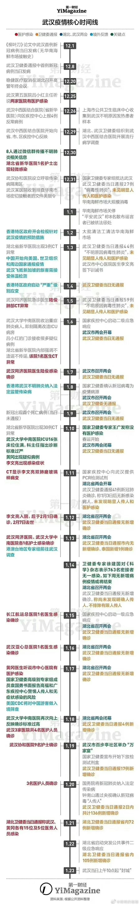

Preamble
Initial page
Informations from videos
Chinese Materials
Preface
少儿贫道-民间纪事
Timeline
次生灾难与思考
别叫我英雄，受之有愧
The Whistle-giver
Wuhan Diary under the internet bullying
北岛关闭评论,白睿文微博沦陷
崔永元-给方方上一課
崔永元日记2020年4月22日
English Materials
Disclaimer
Opposition Faction
China Chernobyl Moment
The Moderates
The World After Coronavirus
Descent of Hong Kong
Timeline
Died for Freedom
Published with GitBook
Timeline
来自【微信公众号，少儿贫道】

results matching "
"
No results matching "
"